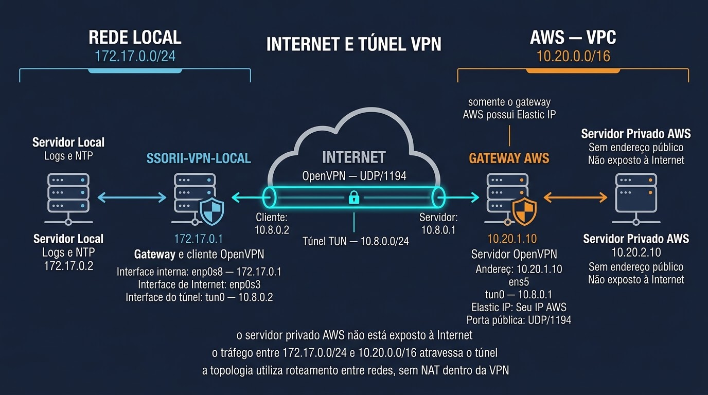
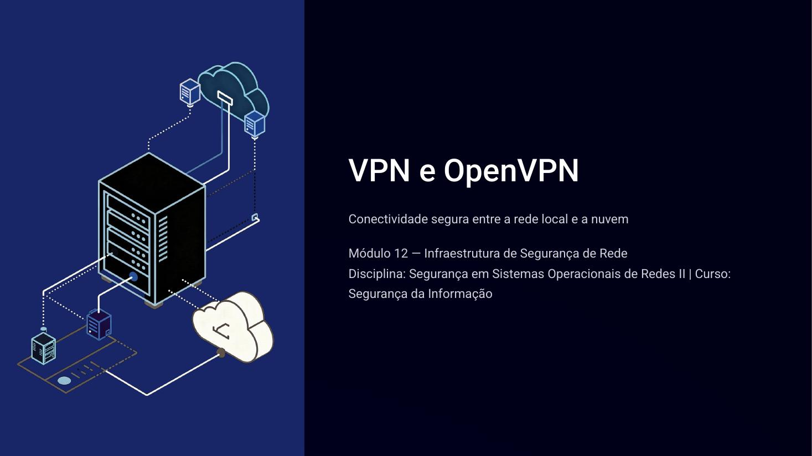

Conecte uma rede local a uma VPC na AWS, entenda cada comando e acompanhe o tráfego da origem ao destino.

Carregando o laboratório…
VPN e OpenVPN: conceitos, tipos de VPN, segurança, topologia do laboratório e preparação para a prática.

Digite para pesquisar nas seções do guia.